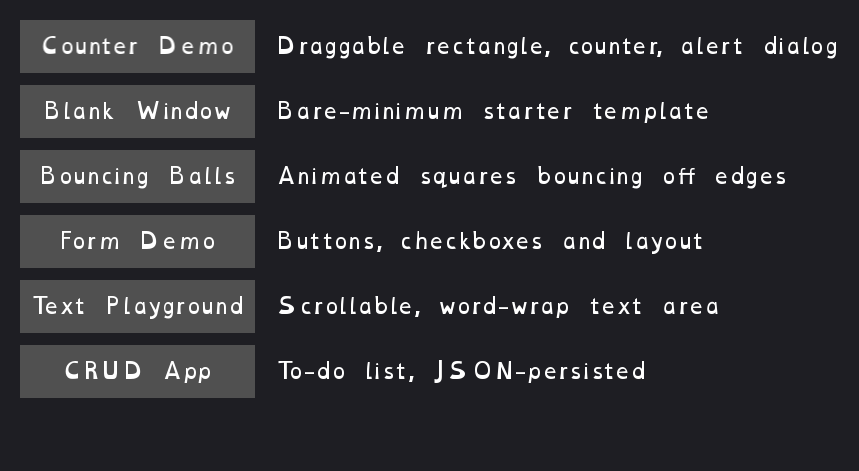

A picker for every other app in this catalog: one button per app, with a short description next to each. Click a button and that app opens in its own window — the launcher stays open, so you can click another one right after.
go run ./cmd/launcher (from the repo root)exe/launcher-start-exe.cmd./launcher